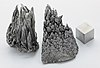

yttrium

Definition: Yttrium is a chemical element with the symbol Y and atomic number 39. It is a silvery-metallic transition metal chemically similar to the lanthanides and has often been classified as a "rare-earth element". Yttrium is almost always found in combination with lanthanide elements in rare-earth minerals, and is never found in nature as a free element. 89Y is the only stable isotope, and the only isotope found in the Earth's crust.
Source: Wikipedia
Wikipedia Page
Wikidata Page